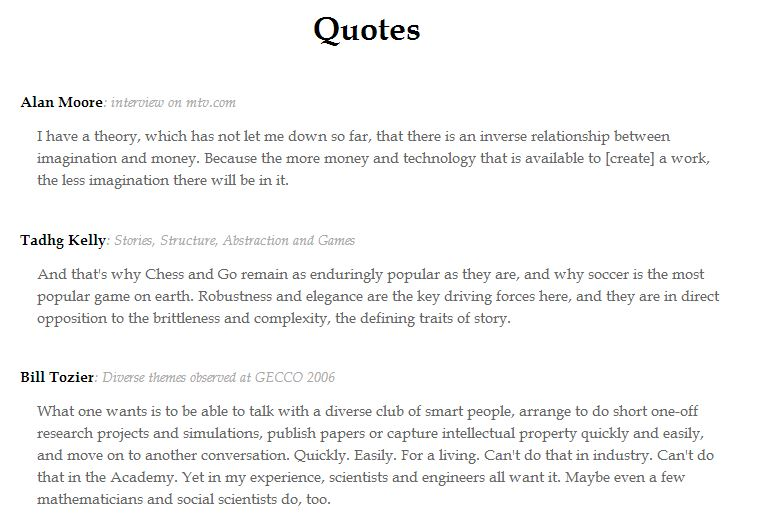
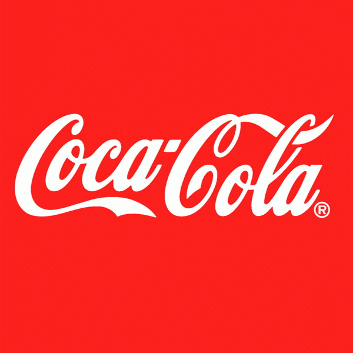

I know almost nothing about typography. I know so little that I don't even know the difference between a typeface and a font. But it seems to me that using fonts well is a super power, the kind of ability that can substantially enhance any media we create. It's worth taking time to understand some basics.
If you've somehow stumbled across these notes, be warned: they are the working notes of an absolute beginner. I know less about fonts than a child going to their third violin class knows about the violin. You should expect to wince roughly as much.
In keeping with the last paragraph, I shall commit numerous crimes against typography in these notes. Indeed, I shall actively seek out opportunities to commit such crimes. It's a sketchbook for experimentation, not a portfolio piece.
Understanding typography may be a super power, but it's not one that I will ever master. My intent here is to: (a) answer a few of my basic questions about typography; (b) develop the rudiments of a basic technique; (c) create notes for later reference and review; and (d) get my brain seriously engaged with questions about typography. Point (d), especially, will help begin a long-term process of learning.
I specifically don't want to go too far down this rabbit hole. It clearly is something one can spend a lifetime on. But I suspect that one can get a considerable fraction of the benefit by spending an intense 10-20 hours engaged with the subject. That's not enough to obtain any kind of deep insight, but will lay the foundation for repeated brief future engagement, further questions, and learning from other people's theory and practice.
According to this article, Adobe says that "a font is one weight, width, and style of a typeface". In particular, 12 point bold Garamond is a different font from 18 point italic Garamond. But both are instances of the same typeface or, perhaps more correctly, the same type family. According to this article, the distinction between fonts and typefaces has largely faded in recent years. Indeed, the terms have become muddled to the point where even graphic designers may interchange them. So it's not worth worrying much about. The caveat is that one may wish to be observant about how other people use the terms: some people do still use them quite precisely. When talking with such a person it will aid communication to be sensitive to their language, and to try to speak it myself. In these notes I shall use the term "font" for the most part, since that seems to be the most common useage.
The classification is one I found in this article. I have also seen many of these terms used elsewhere.
Geometric Sans: Fonts based on the simplest geometric forms, typically with strokes that are the same width. Here's an example:
Century Gothic: I don't much like the kerning. It seems uneven.
Century Gothic works better at the smaller size (12pt). I still see the unevenness, but it seems considerably reduced. The font is somewhat similar to Helvetica, in that it's based on very simple geometric forms, with little elaboration. It's a wider font than Helvetica, especially for curved letters such as "c" and "u". Those letters tend to be emphasized at the expense of narrow letters such as "t" and "l".
Humanist Sans: These fonts are a little more individualized than Geometric Sans fonts, with more variation in stroke width and endings. An example is Verdana:
Verdana: The quick brown fox jumped over the lazy gray dogs.
Arial (this is geometric sans, not humanist sans): The quick brown fox jumped over the lazy gray dogs.
Laying Verdana and Arial out side-by-side, they really are quite similar, apart from the spacing. Another significant difference is that the tail of the Arial "y" is is curved, while the tail of the Verdana y is not. For the most part I slightly prefer the Arial letters. But Arial does feel just a tiny bit squashed compared to Verdana. Look at the two lowercase occurrences of "the" in the sentence: I prefer the Verdana, since the "t" isn't so narrowed down.
For the most part I don't notice the geometric sans versus humanist sans nature of the two fonts. If anything, Arial seems just a little more varied.
Apparently Verdana's creator created it in the 1990s for Microsoft, and was somewhat bound by the limits of screens of the time. Reminds me of David Byrne's idea that music evolves in response to architecture and technology; so too does typography. Since screens and form factors are likely to change enormously over the next fifty years, it seems likely that will drive an ongoing renaissance in typographic design.
Old Style: These are the early serif fonts. A classic example is Garamond:
Garamond: The quick brown fox jumped over the lazy gray dogs.
Transitional and modern fonts: An outgrowth of the old style, but with much more emphasis on contrasting thick and thin strokes.
Times New Roman: The quick brown fox jumped over the lazy gray dogs.
Slab serif: Strokes like sans faces: relatively unvarying in thicknesss. But with solid "slabs" for serifs.
Courier: The quick brown fox jumped over the lazy gray dogs.
Font stacks: A list of fallback fonts so that a website will degrade gracefully. You don't so much want fonts as you want font stacks.
x-height:The distance between the baseline and the mean line. Typically the height of the "x", "u", "v", "w" and "z".
Cap height: The height of the capital letters.
If the x-height is too close to the Cap height that will make it harder to distinguish upper and lowercase letters. On the other hand, a large x-height does help legibility, e.g., in distinguishing "c" and "e".
Used well, they can do the following things:
They can make text easily readable. This sounds trivial, but is not, since some fonts do the opposite: they make it hard to read. I do not know what makes a font good for readability.
They can make text striking. This can be useful to draw the eye. I don't know what makes a font striking, although (as with most people) I often know it when I see it.
They can make text easily scannable, to pick out an item of note. I don't know what makes a font scannable.
The can help us find things quickly. Consider this:

We can quickly skim through and identity the names of the people being quoted, the sources, and the actual quotes. Of course, the layout helps a great deal, as well, but it's in tandem with the fonts. In general it's the layout + font + color combination which makes things easy to find. I've tended to focus on layour and color, but font is also extremely important in this.
Summing up, I believe the most important thing is to pick a readable font, and to consider font choices carefully when laying out a page. In particular, using sharply contrasting fonts (face, weight, size) can help the reader better understand a page, and navigate faster.
A natural response to the comments in the last section is that we should just find a dozen or so fonts that are good, flexible fonts, and then use combinations of those. Why do any more?
For many purposes, that is correct, and I should begin working on finding a go-to list of fonts.
However, to create a special feel for an experience, an unusual font or combination of fonts can be very helpful. The font choices may not be something the reader is particularly aware of, but may help create a lasting impression of something unique.
My reading suggests that a lot of the font design work going on today is in response to the needs of corporations. When launching a new product, a wealthy corporation may commission a type designer to design a new font for them. Think of the "Coca-Cola" logo, which was apparently done in Spencerian script** This was a very common font in the 19th century, and Coke certainly didn't create it. However, today it's a good example of using a font to brand a product.:

I guess that's an extreme example, but reading around I learnt that many products have their own unique fonts. A fun site to look through is fontmeme, which lists the fonts for many products.
The takeaway for me is perhaps limited. I really should aim to understand a dozen or so core fonts: when to use them and what combinations to use. I suspect I don't yet know enough to be more adventurous in making font choices: I would need to do more research, and work with knowledgeable people** It's worth being skeptical about that knowledge. As I read it is becoming clear that some designers like to speak nonsense when they justify typographic choices. They're often font snobs who know little, and fall back on very strongly stated (but unjustified) beliefs about subjective crieria. Conversely, many designers are also deeply knowledgeable. The problem is that as someone who is very ignorant, it can be hard for me to tell the two classes apart. (It took a lot of reading to realize with confidence that this was going on). So you'd want to push people on lots of specific questions. If they don't have insightful, thoughtful things to say, work with another designer..
Typography is a universe: There are conferences, big events, awards, and so on.
One naturally wonders: is it worth it? Are we still getting typographic breakthroughs, changes in typography that substantially enhance the way we relate to text? I don't know enough to know the answer to that question. Nonetheless, it's a fun fact that our society can support this activity!
Type designers seem to be mostly concerned with beauty, legibility, the emotional quality of a typographic experience, and so on. Contrast this with the people who invented alphabets and words. Those latter people were creating new atoms and moleculues of thought and understanding. The two activities are related, of course, and
The innovation in typography suggests an endless frontier for interactive design: Consider the thousands of variations on the letter "a" produced by all the type designers. Each year many more variations are released. Each represents an aspiration, original thought, and analysis. We can do just the same for any design element. Think of a slider, for example. It's tempting to just think "I'll add a slider". But a slider can have every bit as much (and probably more) character and individuality as the letter "a". And the same goes for any other user interface element. A fun project: 50 variations on the slider.
On Comic Sans: It's become a marker of taste to hate Comic Sans. I suspect that in many, perhaps most, cases, it's largely a feigned hatred. To have a strong opinion on Comic Sans signals membership in the tribe of those who know and care (or who would like to be seen as knowing and caring) about typography. I'm sure that for some people this is simply an affectation adopted for amusement. Certainly, someone who truly hates a font is suffering from extreme first-world problems. Font designers get a pass from this verdict: to be any good they'd need to live inside fonts, and it would not be surprising if they become quite sensitive to what they see as errors.
With that said, the last paragraph is markedly less legible than many of the other paragraphs. The main exception is the initial (bold) lede to the paragraph. I wonder if the issue is the size?
18 point is reasonably legible when used briefly.
But it doesn't work so well at the smaller size (12 point).
Font snobbery: Related to the dislike for Comic Sans is a certain amount of general font snobbery. People shriek their dismay at "appalling" font choices. In some instances, they have a point: a poor colour scheme or too-small font can make something unreadable. But the size of the shrieks goes far beyond this. It's worth actively resisting this snobbery, in my opinion. I suspect that good typographers mostly avoid it: (1) they can use strong arguments to make their case, rather than loud arguments; and (2) they have no need to preen, and lord it over others. Summing up, someone with a very strong opinion (and without very detailed reasons) is likely a good someone to ignore.
(Why does the snobbery exist? Good question. Snobbery can occur in any field. But it seems particularly easy in fields where criteria are to some extent subjective. The lazy snob can fall back on loud opinions about those subjective criteria. It can be difficult to question those opinions: "But why does Comic Sans looks unprofessional?" "I can't believe you're asking me that!"** "I can't believe you don't know" seems like an anti-signal. People who do it are often relatively clueless, and trying to act knowledgeable. This isn't 100 percent reliable as a signal – I know some quite knowledgeable people who do it. But it's a useful indicator. Etcetera. The only option in these situations is either to move on to something else, or if it really matters, to cheerfully confess complete ignorance – and keep drilling down into the question. I'm sure that the right person could give me a lot of fascinating insights into design errors made in Comic Sans. But it's also perfectly clear that some of the people who complain the loudest don't have a clue.)
I tend to be timid in my use of font sizes: Go for contrast. I suspect my timidity is due to the fact that academic text often is fairly conservative. But the result is that I'm on the conservative end of a conservative approach. This makes it harder for the reader to navigate than should be the case. Try making some errors in the opposite direction** After writing this I doubled the size of the title font, and increased the size of the section fonts. To be honest, I'm still not sure that what I've done is too extreme! Small steps.!
Use large, flexible font families: This is useful when you'll be doing things like footnotes, marginal notes, hyperlinks, and so on: having lots of options makes it easier to find things that work.
Good font combinations tend to be strongly contrasting in some strong ways, and very similar in others: In particular, the contrast makes them easy to tell apart. On similarity: it's useful to go for similar widths and x-heights, unless you're going for a contrast (typically with a very narrow or very wide font).
Sometimes it's enough to use the same font twice, just at different size and weight: In other words, the size and weight can be enough to create a good contrast. Sometimes, color, too, especially reverse neutrals (black and white, for instance).
Mix fonts with a similar personality, or mix in a neutral: This is a little like mixing colours.
Questions I don't have good answers to: What's a good list of go-to fonts? How to choose line width? Line spacing? Rules of thumb for the size of headings versus body text. At least in part I will begin addressing this with the comparisons which follow. Provisional conclusions: Georgia is a pretty good basic serif font, and Lato is a pretty good basic sans-serif font, with Open Sans a useful backup.
abcdefghijklmnopqrstuvwxyz
abcdefghijklmnopqrstuvwxyz
On top is 48pt Times New Roman. Bottom is 48pt Garamond.
Garamond is very slightly narrower.
The Garamond strokes are thinner, and there is more variation. I personally find that difficult to read at smaller font sizes: I'm not much of a fan of Garamond at regular screen sizes.
Garamond's loops tend to be a little rounder, while Times is more upright. Look at the c, the d, the e, for example.
Apparently Times New Roman is considered a narrow font, and part of the reason is that newspapers prefer narrower fonts (= more text on fewer pages, apparently. This is not as obvious as it sounds: the decrease in legibility might need to be compensated by using a larger font. But apparently the width-legibility tradeoff tends to make narrower fonts denser at the same level of legibility).
Both a's are rather droopy. The Times b is less elaborate in the bottom left. The c's are similar, but the Times is more upright. Ditto the d's and e's. The Garamond f has a more varied stroke across the middle than does the Times. The g is a rare case where the Times font feels a little less upright than Garamond. The h's are very similar, as are the i's. The tail of the Garamond j is very cut off, while the tail of the Times j is well rounded. Skipping along, the Garamond r has a droopiness, much like the a. The serifs on the Times s are much more pronouned than Garamond (this is generally true, although particularly pronounced for the s). The Garamond t is like the f. The tail of the Garamond y is a little more cut off than the Times y (compare the j).
Summing up: Times is a heavier, more upright font, less rounded in the loops (o, b, d, p, q etc). Garamond seems too spindly to me to be a serious screen font for body text. It will work okay at larger sizes. In general, I think I'd prefer Times, unless I was using one of them as a display font (unlikely), in which case I suspect it would depend on context.
abcdefghijklmnopqrstuvwxyz
abcdefghijklmnopqrstuvwxyz
On top is 48pt Georgia. Bottom is 48pt Times New Roman.
Times is narrower. Georgia is a bit heavier. The Georgia loops are little flatter, not quite as upright. I like all these differences. The one obvious thing that I don't like about Georgia is that it's a bit more rectilinear. This is perhaps because of its origin as an early computer font, when resolutions were very limited.
Standout differences at the letter level: The Georgia f stroke is quite a bit heavier. The dots on the i and j are also quite a bit heavier. The Georgia p and q are more symmetric (true of b and d as well). The Georgia r looks a little more like Garamond. The Georgia t's stroke is quite a bit less ornate.
Summary: Quite similar. I think I slightly prefer Georgia: it's not quite as squashed. It may be better in italic, too, for this reason. The downside is the slightly unnatural rectilinearity. I'd be skeptical of using it at large sizes for that reason (unless that was the look I needed). At small font sizes I expect it would look better than Times.
abcdefghijklmnopqrstuvwxyz
abcdefghijklmnopqrstuvwxyz
So Palatino is a little wider than Georgia, and not quite as heavy. It's still significantly heavier than Garamond. Many of the curvy Palatino letters have sharper serifs than Georgia. I prefer the Georgia look. However, Palatino doesn't have the same rectilinear serifs as Georgia, which is a strike in favor of Palatino. Palatino has a lower x-height than Georgia.
Standout differences at the letter level: I don't like the cut-off look of the Palatino c, f, p, q. I also don't like the cut off Palatino j. The Palatino x is odd at the bottom.
Overall: I don't much like the way the serifs are done in Palatino, nor the lower x-height. They probably work okay at smaller font sizes. The weight is likely something that would need to be evaluated in context. I think Georgia is the winner here.
abcdefghijklmnopqrstuvwxyz
abcdefghijklmnopqrstuvwxyz
The Georgia is a little wider, higher x-height, a little fuller, with a few more flourishes, and heavier. I prefer the style of the serifs on Crimson text: they don't have the annoying rectilinear feel of Georgia.
At the letter level: the terminal of the Georgia a is way bigger than for Crimson text. This is a common feature – true also of the terminal of the c, the terminal of the f, the j, and the r. The "belly" of the Georgia a is much higher than for Crimson text. That would likely make the Georgia a little easier to read. The tail of the j and y in Georgia is longer than the tail for Crimson text. Again, I think that'd make Georgia a little easier to read, although it also makes it a little more cluttered. The k-l kerning in Georgia is wrong: they smush up against one another.
Overall: I think I slightly prefer Georgia. It's worth looking at both at a smaller size:
abcdefghijklmnopqrstuvwxyz
abcdefghijklmnopqrstuvwxyz
I think it'd actually make sense to compare 14pt Georgia against 15 or 16pt Crimson text:
abcdefghijklmnopqrstuvwxyz
abcdefghijklmnopqrstuvwxyz
They're really quite similar. The Crimson text isn't quite as heavy. It's also not quite as dense, which is a nice feature. Georgia is a little more like Times New Roman: it has that quality of being very dense. That's not so good.
Unfortunately, it turns out that the Crimson Text caps are horrible, at 16pt:
ABCDEFGHIJKLMNOPQRSTUVWXYZ
They work better at 14pt. Let me try them also at 18pt:
ABCDEFGHIJKLMNOPQRSTUVWXYZ
Okay, that's also dodgy. So I think I should abandon Crimson text.
So far, the winner amongst the serif fonts is Georgia.
abcdefghijklmnopqrstuvwxyz ABCDEFGHIJKLMNOPQRSTUVWXYZ
abcdefghijklmnopqrstuvwxyz ABCDEFGHIJKLMNOPQRSTUVWXYZ
On my browser+computer they are rendered identically. They're not the same font, so I presume this is a deliberate choice.
abcdefghijklmnopqrstuvwxyz ABCDEFGHIJKLMNOPQRSTUVWXYZ
abcdefghijklmnopqrstuvwxyz ABCDEFGHIJKLMNOPQRSTUVWXYZ
400 weight open sans:
abcdefghijklmnopqrstuvwxyz ABCDEFGHIJKLMNOPQRSTUVWXYZ
600 weight open sans:
Very similar. Arial is heavier. Interesting: open sans small letters are wider, but caps are narrower. I guess that would lessen the intrusion of the capital letters, which might be a good thing in body text. Open sans is more of a humanist sans font – there is considerably more variation. The x-height on both is very high, particularly the Airal.
Detailed, letter-by-letter: I like the more compact A and B of the open sans. The same is true of many of the caps, in fact. The more closed C is better for Arial. I'm not so keen necessarily on the narrow E and F for the open sans (although I don't like the wide E in Arial). The Arial J has a more rounded tail. The Arial Q has a more natural cross. The Open Sans R is much nicer. Then Open Sans g is much more elaborate. The Open Sans has a rounded dot on top of the i and j.
The 600 weight Open Sans feels more crowded than the Arial. Let me try looking at Arial at that weight:
abcdefghijklmnopqrstuvwxyz ABCDEFGHIJKLMNOPQRSTUVWXYZ
Same as before. Let's try bolding:
abcdefghijklmnopqrstuvwxyz ABCDEFGHIJKLMNOPQRSTUVWXYZ
And compare to bolded Open Sans:
abcdefghijklmnopqrstuvwxyz ABCDEFGHIJKLMNOPQRSTUVWXYZ
Interesting: the differences seem less pronounced to me. The dip below the baseline for Open Sans J seems annoying (and to some extent the Q). The narrow E and F are a distraction. On the other hand, I like the narrower B, C, D, G, K, M, P, Q. So that seems maybe like a small win for Open Sans.
Open Sans is a little more elaborate, a little more open, the caps are narrower (mostly a good thing, not entirely).
Overall, I'm probably inclined to prefer Open Sans. Both are likely to be used as bold display fonts, and are quite similar. I suspect that the slightly narrower caps are a slight win for Open Sans, and the slightly more elaborate nature, although it has a few annoying things. It's still a relatively neutral font, although not quite as neutral as Arial.
abcdefghijklmnopqrstuvwxyz ABCDEFGHIJKLMNOPQRSTUVWXYZ
abcdefghijklmnopqrstuvwxyz ABCDEFGHIJKLMNOPQRSTUVWXYZ
I like Lato! Better widths on B, C, E, F, and many other caps. No annoying dip on the J. In general, I think the Lato caps are better widths than the Open Sans widths. There are a few exceptions: the D, maybe the K. But in general it's an improvement. I'd prefer a higher x-height on the Lato, but it's still nice and high. Lato, like Open Sans, is a little more elaborate than Arial (look at the g, the f, the t), but still very neutral. I regret the loss of the tail on the Lato y.
Overall: a slight edge to Lato. Let me take a look at the bolded versions:
abcdefghijklmnopqrstuvwxyz ABCDEFGHIJKLMNOPQRSTUVWXYZ
abcdefghijklmnopqrstuvwxyz ABCDEFGHIJKLMNOPQRSTUVWXYZ
Lato looks more open and readable, while still being very bold. In fact, you need to go to the 900 to get something similar:
abcdefghijklmnopqrstuvwxyz ABCDEFGHIJKLMNOPQRSTUVWXYZ
I think I'm slightly likely to prefer that, too.
Verdict: a very narrow victory to Lato. Worth trying both in any given situation, to see which works better.